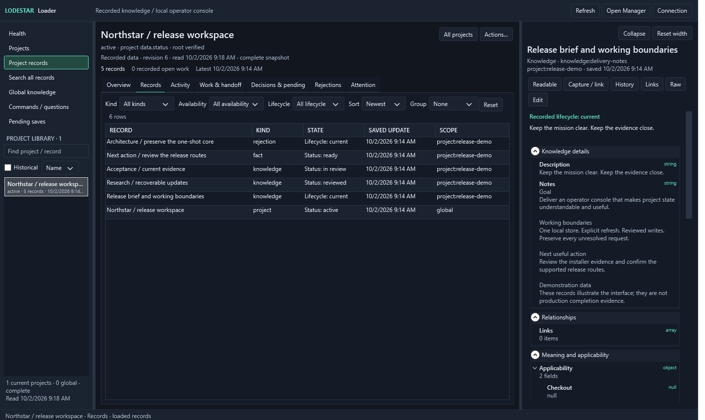

01 / Know where to look
Attention and health.
Find recorded gaps and follow-up work. Health shows what was observed and offers an explicit integrity check, with unknown state kept visible.

Lodestar 3 / Context, kept close.
A local notebook for your coding agents. Keep the decisions, evidence, and unfinished work that help your next session begin with its bearings.
Now with Loader for Windows and a terminal Manager.
Your agents and both interfaces use one shared store.
Meet your project notebook
Loader puts the records within reach: project Attention, observed health, readable context, and deliberate corrections. Manager brings the same store to a menu in your terminal.

01 / Know where to look
Find recorded gaps and follow-up work. Health shows what was observed and offers an explicit integrity check, with unknown state kept visible.
02 / Read the whole record
Sort and group records, then read their content, provenance, and history. Recorded plans and evidence keep unmet outcomes in view.
03 / Make a deliberate change
Inspect the proposed correction before saving. Checked writes and retained requests support a clear recovery path after interruption.
Less rediscovery
Every new session needs its bearings. What matters in this project? Which decision still stands? What changed since the last run?
Lodestar keeps a useful starting point close to the work. Your agent can inspect the sources, notice stale evidence, and leave the next session a clear continuation.
Start in your project directory. Read relevant saved context, decisions, and unfinished work alongside the sources your agent needs to inspect.
lodestar start --cwd .
Source checks flag evidence that needs another look. A saved claim carries its source and scope, so your agent can judge whether it still applies.
lodestar find "release process"
Keep consequential decisions, corrections, and actual outcomes. Checked updates preserve history and surface conflicts for deliberate correction.
lodestar put --file update.json
One shared foundation
Loader, Manager, the CLI, and native agent skills work through the same local core. Your instructions and decisions keep their authority; saved context brings its evidence with it.
Read the operating boundariesGet started
Use the Windows package to inspect and manage your notebook. Use the CLI package to connect it to your agents. Both can use the same Windows-owned database.
Windows x64 / Loader + Manager
Extract the verified Windows archive and run Install.cmd for a per-user installation with Start Menu entries. Keep your database outside the application folder.
Install.cmdRun from the extracted releasePrerequisites: Node.js 24.15.0+, .NET 10 Desktop Runtime (x64), and PowerShell 7.
Prefer a portable folder? The same archive includes Setup.cmd, Loader.cmd, and Manager.cmd.
CLI / Native agent skills
Native skills for Codex, Claude Code, OpenCode, and Hermes. A CLI for scripts and other agents. Inspect the setup plan before applying it.
# Install, then review the setup plan
npm install --global lodestar-agent-context@{{VERSION}}
lodestar setup --target all
# Apply the selected native skills
lodestar setup --target all --apply
lodestar start --cwd .Requires Node.js 24.15.0+. For a new store, run lodestar init before the first start. An existing schema-5 store needs no conversion.
Lodestar {{VERSION}}
Version 3 adds Loader and Manager, project Attention, guided capture and linking, and a shared view of plan and evidence gaps. Readable records and reviewed saves make everyday inspection and correction more direct.
Contract 5 and schema 5 remain unchanged. Existing schema-5 stores need no migration. Earlier stores have an explicit migration and recovery procedure.